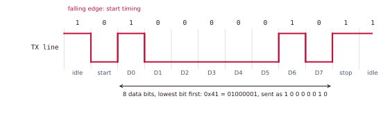
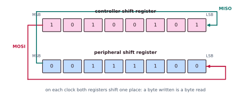
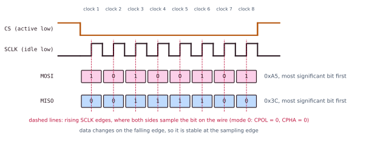
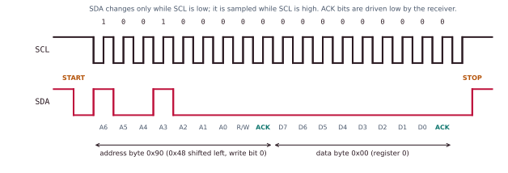

Chapter 7: Peripheral Interfaces¶
A processor core is useless in isolation. The interesting part of a system-on-chip is its edge: the pins where digital logic meets sensors, actuators, storage, displays, radios and other chips. This chapter walks through the peripheral interfaces that dominate embedded and SoC design: GPIO, UART, SPI and I²C, with a short look at the high-speed serial world of I²S, USB and PCIe. It covers the register-level mechanics, the wire-level protocols, the timing arithmetic, and above all the trade-offs that decide which interface to reach for.
You should know the memory map and the manager and subordinate roles of Chapter 6.
7.1 Registers, and how data moves¶
To software, every peripheral is just a handful of addresses. With memory-mapped I/O (MMIO) a device's control registers sit at addresses in the memory map, so an ordinary load or store reaches the device instead of RAM. RISC-V, Arm and most modern ISAs have no special I/O instructions: loads and stores, and the same on-chip interconnect of Chapter 6, do it all.
/* A UART whose registers start at 0x1001_0000 */
#define UART0 0x10010000u
#define UART_TXDATA (*(volatile uint32_t*)(UART0 + 0x00))
#define UART_RXDATA (*(volatile uint32_t*)(UART0 + 0x04))
#define UART_TXCTRL (*(volatile uint32_t*)(UART0 + 0x08))
#define UART_IE (*(volatile uint32_t*)(UART0 + 0x10)) /* interrupt enable */
UART_TXDATA = 'A'; /* a plain store: the hardware shifts a byte out */
while (UART_TXDATA & (1u << 31)) {} /* bit 31 = FIFO-full flag */
Always declare device registers volatile
The volatile qualifier is not optional for MMIO. It tells the compiler that the memory can change by itself and that every access has a side effect, so reads and writes must not be kept in a register, merged, reordered or removed. Drop it and an optimising compiler will happily delete your "redundant" polling loop.
Three ways to move the data¶
Once you can touch a register, you need a strategy for moving bytes through it. The same three options recur for every peripheral.
| Style | How it works | Cost | Good for |
|---|---|---|---|
| Polling | The CPU keeps reading a status flag until the device is ready. Like walking to the door every minute to see whether the parcel has come | Burns the whole core and wastes energy | Very early boot, ultra-simple code, short hard-real-time waits |
| Interrupt | The device raises an interrupt request when it is ready; the CPU does other work meanwhile. A doorbell | A context switch per event (tens to hundreds of cycles) | Sporadic, moderate-rate I/O: a key press, an arriving UART byte |
| DMA | A direct-memory-access engine copies a whole buffer between device and memory and interrupts once at the end. A delivery service that stocks the fridge | Needs a DMA controller and careful handling of caches and coherence | High-throughput streams: audio, SD cards, Ethernet, frame buffers |
The rule of thumb: poll for the trivial, interrupt for the occasional, DMA for the bulk.
Parallel or serial?¶
A parallel link sends many bits at once on many wires; a serial link sends them one after another on one wire. Parallel sounds faster, but at high speed it loses.
- Skew. Bits on different wires arrive at slightly different times, and the word is valid only once the slowest has arrived. Skew caps the clock rate and worsens with distance.
- Pins and area. A 16-bit bus with its control lines needs about 20 pins and 20 traces; a serial link needs 2 to 4. Pins are expensive on a package.
- Crosstalk and radiation. Many switching wires disturb each other and radiate.
That is why almost everything fast today is serial: one or a few carefully controlled lanes clocked far higher than any parallel bus could manage. Every interface in this chapter is serial. They differ in how many wires they use and in how they decide when a bit is valid. The core tension is always pins against speed against distance against complexity.
7.2 GPIO: one wire, one bit¶
A general-purpose I/O (GPIO) pin is a single wire that the CPU can drive high or low, or read. It is the humblest interface and the substrate of all the others. Each pin is controlled by a few bits, usually packed into per-port registers in which bit \(n\) corresponds to pin \(n\).
| Register | Meaning |
|---|---|
| DIR (or MODER) | Direction: 0 = input, 1 = output |
| OUT (or ODR) | The level to drive when the pin is an output |
| IN (or IDR) | The level currently sensed on the pin (read-only) |
| PULL (or PUPDR) | Switch on an internal pull-up or pull-down resistor, so that a floating input reads a defined level |
| SET / CLR | Set or clear chosen pins in one step, without disturbing the others |
| MUX (or AFR, PINMUX) | Hand the pin to another block inside the chip (a serial port, a timer) instead of plain GPIO |
Example 7.1: blink an LED, read a button
#define GPIO 0x10012000u
#define DIR (*(volatile uint32_t*)(GPIO + 0x00))
#define IN (*(volatile uint32_t*)(GPIO + 0x08))
#define SET (*(volatile uint32_t*)(GPIO + 0x0C))
#define CLR (*(volatile uint32_t*)(GPIO + 0x10))
DIR |= (1u << 5); /* pin 5 is an output */
SET = (1u << 5); /* LED on */
CLR = (1u << 5); /* LED off */
/* button on pin 2, internal pull-up on: pressed reads 0 */
int pressed = ((IN & (1u << 2)) == 0);
1u << 5 is binary 100000: only bit 5 is set, so only pin 5 is touched. Why SET and CLR? Changing one bit of OUT takes three steps: read the register, change the bit, write it back. If an interrupt changes another pin in between, its change is lost. One write to SET cannot be interrupted halfway.
Outputs, inputs and pull-ups¶
There are two kinds of output. A push-pull output actively drives both high and low. An open-drain output can only pull low; something else, a pull-up resistor, must pull the line high. That sounds weak, but it lets many devices share one wire safely, as I²C does (Section 7.5).
An input connected to nothing floats and picks up noise, reading 0, 1, 0 at random. A pull-up resistor gently holds it at 1 until something pulls it low, so that an open switch reads a definite value.
Pin-muxing. A chip has far more internal blocks than pins, so each pin is a multiplexer: GPIO, or UART transmit, or SPI clock, chosen by a register. Board bring-up is largely the art of assigning peripherals to pins without conflicts.
Debouncing and interrupt on change¶
A mechanical switch bounces: a single press produces a burst of edges over about 1 to 20 ms as the contacts chatter, and naive edge counting sees dozens of presses. Debouncing accepts a new level only once it has been stable for several samples (in software), or smooths it with a resistor-capacitor filter (in hardware).
Instead of polling, most GPIO blocks support interrupt on change: a pin can raise an interrupt on a rising edge, a falling edge or a level. The interrupt service routine reads a per-pin status register, handles the event and writes back to clear the flag. This is how a keypad, or a sensor's "data ready" line, wakes a sleeping CPU.
7.3 UART: no shared clock¶
A UART (universal asynchronous receiver/transmitter) links two devices with two wires: each one's TX goes to the other's RX. It is asynchronous: there is no clock wire. Both sides are set in advance to the same baud rate, in bits per second, and time the bits with their own clocks. It is still the standard for debug consoles, GPS modules and modems.
The frame¶
The line rests high. A character is sent as a frame.
- Start bit: one low bit. Its falling edge tells the receiver "a character begins: start timing now".
- Data bits: usually 8 (sometimes 5 to 9), sent lowest bit first.
- Parity bit: optional, a weak error check.
- Stop bit(s): one or two high bits that mark the end and guarantee an idle gap.
The shorthand 8N1 means 8 data bits, no parity, 1 stop bit, the most common setting. Since there is no clock, the receiver samples each bit near its middle; oversampling at 16 times the baud rate helps it find that middle despite small clock differences.

If the receiver's FIFO fills, bytes are lost. Hardware flow control adds two wires: a receiver drops RTS (request to send), which the far end sees on its CTS (clear to send), meaning "pause". Software flow control (XON and XOFF) sends in-band control bytes instead. Many embedded links skip flow control and size their FIFOs generously.
Example 7.2: 115 200 baud
Speed. One bit lasts \(1/115\,200 = 8.68\ \mu\text{s}\). A frame in 8N1 is 1 start + 8 data + 1 stop = 10 bits \(= 86.8\ \mu\text{s}\). The peak character rate is \(115\,200/10 = 11\,520\) characters per second, about 11.25 KiB/s.
Clock error. Suppose the UART derives its clock from a 16 MHz peripheral clock with 16 times oversampling. The divisor is $\(\frac{16\,000\,000}{16 \times 115\,200} = 8.68\)$ but only whole numbers can be programmed. A divisor of 9 gives an actual rate of \(16\,000\,000/(16 \times 9) = 111\,111\) baud, an error of 3.5% below 115 200. A divisor of 8 gives 125 000 baud, an error of 8.5%. A UART tolerates only about 2 to 3% mismatch before the last bits of a frame are misread, so even the better choice is marginal. That is why 115 200 works on some crystals and is flaky on others.
7.4 SPI: fast, with a clock¶
SPI (serial peripheral interface) trades pins for speed. It is synchronous: the controller supplies a clock. And it is full-duplex: data flows both ways at the same time. It uses four signals.
| Signal | Direction | Job |
|---|---|---|
| SCLK | controller to peripheral | The clock: each edge moves one bit |
| MOSI | controller to peripheral | Data out ("controller out, peripheral in") |
| MISO | peripheral to controller | Data back |
| CS (or SS) | controller to peripheral | Chip select, active low: "you, listen" |
There are no addresses and no acknowledgements. The controller picks a device purely by pulling that device's own CS wire low, which costs one extra pin for every device, and is SPI's main scaling cost.
SPI is really two shift registers joined in a ring. On each clock the controller shifts a bit out on MOSI while shifting a bit in from MISO, so a byte written is a byte read.

Four modes: CPOL and CPHA¶
Two bits define the relation between the clock and the data. CPOL (clock polarity) sets the idle level of SCLK; CPHA (clock phase) sets whether data is sampled on the first or second clock edge. Both ends must agree, or every byte is garbage.
| Mode | CPOL | CPHA | SCLK rests | Data sampled on |
|---|---|---|---|---|
| 0 | 0 | 0 | low | rising edge (first) |
| 1 | 0 | 1 | low | falling edge (second) |
| 2 | 1 | 0 | high | falling edge (first) |
| 3 | 1 | 1 | high | rising edge (second) |
A datasheet always states the required mode; modes 0 and 3 are the most common.

With \(N\) peripherals the simple topology is a star: shared SCLK, MOSI and MISO and one CS per peripheral. The alternative is a daisy chain, where one device's MISO feeds the next one's MOSI, all sharing a single CS, so that the bits ripple through the chain like one giant shift register. It suits LED strings and some converters, but every device must be clocked for a byte to reach the last one.
Example 7.3: loading a boot image from flash
An SPI flash clocked at 40 MHz with one data wire moves 40 Mbit/s \(= 5\) MB/s. A 4 MiB boot image is \(4\,194\,304\) bytes, so the pure clocking time is \(4\,194\,304/5\,000\,000 \approx 0.84\) s. Quad-SPI uses four data wires, four times as fast: about 0.21 s. Add DMA, so that the CPU is not the bottleneck.
SPI runs at tens of MHz (often 50 MHz and more) over short distances: flash memory, SD cards, displays and converters. The price is wires: four, plus one chip select per device.
7.5 I²C: two wires, many devices¶
I²C (inter-integrated circuit) goes the other way: as few pins as possible, paid for with speed and protocol. Every device on the bus shares just two wires, SDA (data) and SCL (clock), plus ground.
Both are open-drain with a pull-up resistor. Any device can pull a line low; none can drive it high. The line is high only if nobody pulls it down, a "wired-AND". That is what lets many devices, even several controllers, share the bus safely.
Anatomy of a transfer¶
- START: the controller pulls SDA low while SCL is high. SDA otherwise changes only while SCL is low, so this unique condition seizes the bus.
- Address and direction: the controller clocks out a 7-bit address and then one direction bit (0 = write, 1 = read). Every device compares the address with its own.
- ACK: after each byte the receiver pulls SDA low for one clock to acknowledge. If nobody pulls it down, that is a NACK: the device is absent or refusing. This per-byte handshake is something SPI lacks.
- Data bytes: 8 bits each, most significant bit first, each followed by an ACK or NACK.
- STOP: the controller releases SDA to high while SCL is high, freeing the bus.

Addressing, stretching, arbitration and speeds¶
- Addressing. Addresses are 7 bits: 128 values, of which 16 are reserved, leaving 112 usable. A 10-bit extension exists for crowded buses. Clashes between identical chips are a classic bring-up headache, which is why many parts have 1 to 3 strap pins to choose among a few addresses.
- Clock stretching. A slow device may hold SCL low after an ACK; the controller sees the clock not rising and waits. A slow sensor can thus keep up without dropping data.
- Arbitration. I²C allows several controllers. Because the bus is wired-AND, if two controllers transmit at once, the one writing a 1 (releasing SDA) while the other writes a 0 (pulling it low) reads back a 0, realises it has lost, and backs off. The winner's message is not damaged.
| Mode | Standard | Fast | Fast-mode Plus | High-speed |
|---|---|---|---|---|
| Maximum SCL | 100 kHz | 400 kHz | 1 MHz | 3.4 MHz |
Example 7.4: reading a temperature sensor
An LM75-style sensor sits at 7-bit address 0x48, and its temperature is in register 0.
START -> 0x90 (0x48 shifted left, + write bit 0) -> ACK
-> 0x00 (register 0) -> ACK
START -> 0x91 (0x48 shifted left, + read bit 1) -> ACK
-> high byte from the sensor -> controller ACK
-> low byte from the sensor -> controller NACK -> STOP
The second START is a repeated START. The 7-bit address 0x48 becomes 0x90 or 0x91 once the direction bit is appended, a constant source of "wrong address" bugs: \(0x48 \times 2 = 0x90\). The exchange has about 5 bytes of 9 clocks each: 45 clocks. At 400 kHz that is \(45/400\,000 \approx 112\ \mu\text{s}\) (not counting the START and STOP conditions).
7.6 Choosing an interface¶
| GPIO | UART | SPI | I²C | |
|---|---|---|---|---|
| Wires | 1 per signal | 2 (plus 2 for RTS and CTS) | 3 plus 1 per device | 2 |
| Clock | none | none (asynchronous) | the controller's | shared SCL |
| Duplex | not applicable | full | full | half |
| Typical speed | not applicable | up to a few Mbaud | tens of MHz | 0.1 to 3.4 MHz |
| Choosing a device | not applicable | point to point | a chip-select wire | an address in the message |
| Errors | not applicable | optional parity | none | per-byte ACK |
| Typical use | LEDs, buttons, resets | console, GPS, modems | flash, SD, displays, converters | sensors, EEPROM, clocks, power management |
The mental model: GPIO is one bit; UART is two chips with no clock, easy; SPI is fast but pin-hungry; I²C is many chips on few pins, slower and with more protocol. Pins, speed, distance and complexity: pick two, pay for the others. The trade is pins against speed, not "newer against older": standard I²C, at 100 to 400 kHz, is an order of magnitude slower than everyday SPI, although it is "a real bus".
7.7 Beyond the basics: I²S, USB and PCIe¶
When you outgrow the simple buses, interfaces become differential and packetised.
- I²S (inter-IC sound) is a cousin of SPI for digital audio: a bit clock, a word (left/right) clock and a serial data line, streaming samples between a codec and an SoC, usually fed by DMA.
- USB uses a pair of wires carrying opposite signals, packets and a host in charge. It is hot-pluggable and self-describing, with enumeration, endpoints and a class system (keyboards, mass storage, serial ports), and its speeds range from 1.5 Mbit/s to tens of Gbit/s in the latest generations.
- PCIe is the high-end on-board fabric: point-to-point lanes (\(\times1\) up to \(\times16\)), each a pair of one-way serial links, in layers like a network (physical, data-link and transaction). It carries NVMe SSDs, GPUs and network cards.
The trend: as speed rises, shared single-ended wires give way to differential pairs, which are immune to noise and from whose data the clock is recovered, and simple frames give way to packets with addressing, flow control and error correction. The peripheral bus quietly becomes a network.
7.8 Summary¶
- Devices are memory-mapped registers; declare them
volatile. Poll the trivial, interrupt the occasional, use DMA for the bulk. - Serial beats parallel at speed: skew, pins and crosstalk limit wide buses.
- GPIO: direction, data and pull registers, open-drain and pull-ups, pin-muxing, debouncing and interrupt on change.
- UART: no clock, an agreed baud rate, start, data (lowest bit first), stop frames. The baud rates at the two ends must agree within about 2 to 3%.
- SPI: clocked, full-duplex, four modes (CPOL and CPHA), fast, one chip select per device, no addresses and no ACK.
- I²C: two shared open-drain wires, 7-bit addresses, per-byte ACK, clock stretching, non-destructive arbitration; slower.
- Choose by weighing pins, speed, distance and complexity.
7.9 Exercises¶
Exercise 7.1. "SPI devices have addresses, like I²C." True or false?
Answer
False. SPI picks a device by its own chip-select wire; there is no address on the wire and no acknowledgement. Adding a device adds a CS pin.
Exercise 7.2. At 9 600 baud with 8N1, how long does one character take? And at 115 200 baud?
Answer
Ten bits per character. At 9 600 baud: \(10/9\,600 \approx 1.04\) ms. At 115 200 baud: \(10/115\,200 \approx 86.8\ \mu\text{s}\).
Exercise 7.3. Why must an I²C line be open-drain rather than push-pull?
Answer
Many devices share each wire. If one device drove it high while another drove it low, they would fight, effectively a short circuit. With open-drain, nobody drives high, so a low always wins safely, and the pull-up resistor restores the high when everyone lets go. This also makes arbitration and clock stretching possible.
Exercise 7.4. A UART line, sampled once per bit time after the idle state, reads 0 1 1 0 1 0 0 1 0 1. Which character is it (8N1)?
Answer
The first 0 is the start bit. The next eight bits, lowest bit first, are 1 1 0 1 0 0 1 0, so \(D_0 = 1, D_1 = 1, D_2 = 0, D_3 = 1, D_4 = 0, D_5 = 0, D_6 = 1, D_7 = 0\). Reading from \(D_7\) down to \(D_0\) gives 0100 1011 \(= 0x4B\), which is the ASCII character 'K'. The final 1 is the stop bit.
Exercise 7.5. In SPI mode 0, the controller sends 0xA5 while the peripheral sends 0x3C. What does each side hold after 8 clocks?
Answer
They have swapped. The controller's shift register now holds 0x3C and the peripheral's holds 0xA5, because each clock shifts one bit out of one register and into the other.
Exercise 7.6. Write the I²C byte sequence for reading register 0 from a sensor at 7-bit address 0x48, returning two bytes.
Answer
START, 0x90 (address 0x48 shifted left, write bit 0), ACK, 0x00 (register 0), ACK, repeated START, 0x91 (address with read bit 1), ACK, first byte from the sensor, controller ACK, second byte from the sensor, controller NACK, STOP.
Exercise 7.7. A board has a status LED, a debug console to a PC, a 32 Mbit configuration flash, and a temperature sensor, with three more identical sensors to be added later. Choose GPIO, UART, SPI or I²C for each and justify the choice.
Answer
| Job | Choice | Why |
|---|---|---|
| Status LED | GPIO | It is one bit |
| Console to a PC | UART | Two wires, no shared clock needed, and every PC adapter speaks it |
| Configuration flash | SPI (quad if available) | It needs raw speed at boot |
| Temperature sensors | I²C | The data rate is low, and four sensors share the same two wires at different addresses (with strap pins to set the addresses of identical parts) |
Exercise 7.8. An SPI flash is clocked at 40 MHz. How long does it take to read 4 MiB with one data wire and with four (quad-SPI)? Ignore command overhead.
Answer
One wire: 40 Mbit/s \(= 5\) MB/s, so \(4\,194\,304/5\,000\,000 \approx 0.84\) s. Four wires: four times the rate, 20 MB/s, so about 0.21 s.
Exercise 7.9. Which SPI mode has the clock idle high and samples data on the rising edge? What are CPOL and CPHA?
Answer
Mode 3: CPOL = 1 (the clock rests high) and CPHA = 1 (data is sampled on the second edge, which is the rising edge when the clock rests high).
Exercise 7.10. Why does the GPIO block provide separate SET and CLR registers?
Answer
Changing one bit of a single output register needs a read-modify-write: three steps. If an interrupt changes another pin between the read and the write, that change is overwritten and lost. A single store to SET (or CLR) changes exactly the chosen pins in one indivisible step, so it cannot be interrupted halfway.